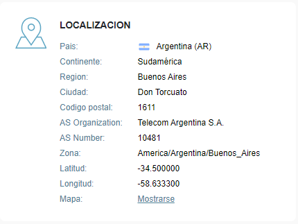

El anonimato y el negocio de la información
Cómo la falta de anonimato es el precio a pagar por usar redes sociales, 7 de noviembre 2020
El anonimato en internet es una polémica que se viene discutiendo hace décadas, pero aún hoy en día no es una realidad. Para empezar, hay distintos tipos de anonimato que entran en la discusión.
La primera variante de anonimato sería la más extrema, donde uno puede publicar lo que quiera sin ingresar sesión, de forma completamente anónima e irrastreable. Este sistema se aplica únicamente en blogs y raramente en chats dado que sin un dato que identifique a los usuarios, todos los comentarios parecen provenir de [anónimo] y lleva a una conversación confusa. Debido a esto, se suele sugerir una identidad virtual completamente separada de la persona detrás de la pantalla.
Esta identidad virtual es el caso en muchos sitios como Reddit, donde los demás usuarios ven únicamente tu nombre de usuario. Sin embargo, si bien los demás usuarios no pueden ver ninguna información sobre vos, Reddit sí puede. Estos sitios suelen guardar el mail con el que ingresaste junto con muchos otros datos que tu dispositivo otorga de manera automática, incluyendo la dirección IP (única en el mundo), sistema operativo y los detalles de tu navegador.
Es importante notar que la página que visites tiene acceso a mucha más información de la que crees. Whoer es una página que te informa de todo lo que sabe sobre vos simplemente por acceder a su página, y la foto de arriba es de hecho una parte de rodo lo que sabe sobre mí. Sabe que en este momento escribo desde Don Torcuato, mi dirección IP, mis preferencias en cuanto a Cookies y cosas que ya ni entiendo con solo leerlas. Sin embargo, la dirección IP no alcanza para determinar la dirección exacta, de hecho las coordenadas en la foto ni siquiera son precisas, pero al menos son en la misma ciudad. Y si bien dije que la IP no alcanza para determinar la dirección, la realidad es que sí alcanza, pero sólo para aquellos que manejan la bases de datos de IPs, como los proveedores de internet.
Si bien la dirección física que le corresponde a tu IP es algo que sabe únicamente tu proveedor de internet, esto no significa que estés a salvo. En países con gobiernos autoritarios, cualquier comentario, opinión o publicación que hagas por internet puede ponerte en peligro. Y con esto no me refiero a una amenaza de muerte como la que llevó a la cárcel a Nicolás Lucero, sino simplemente opiniones, ideologías políticas o incluso publicaciones con contenido censurado pueden llevar a que el gobierno rastree al usuario, llevándolo preso. De cualquier manera, el caso de Nicolás Lucero también es uno particular.
Macri te vamos a matar no te va a salvar ni la Federal (la 12)
— Nico ☆ (@nicolucero69) August 17, 2016
Este joven (20 años) lo que hizo fue publicar un tweet, en agosto de 2016, amenazando la vida del presidente de ese entonces. Cabe destacar que el contenido del tweet no era nada más que un segmento de una canción de cancha que se había cantado esa misma semana, y Nicolás es un hincha de Chacarita que citó parte de la canción en un tweet.
Más de un año después, cuando “El Destape” publicó una noticia sobre la vez que arrestaron a un joven por amenazar a Macri, distintos usuarios lo acosaron a Nicolás por Tweeter, demostrando odio y expresando sus opiniones. Opiniones a las que él respondió pidiendo disculpas y aclarando el malentendido.
Pido disculpas a @mauriciomacri y a toda la gente qe se sintió intimidada por mi tweet,nunca tuve intención de matar a nadie.era una canción
— Nico ☆ (@nicolucero69) October 31, 2017
Esto no es más que un ejemplo ilustrativo de las consecuencias que pueden traer nuestras acciones por internet, porque por más de que parezcamos anónimos, no significa que lo seamos. Otro caso es el de Luka Magnotta, un asesino canadiense que subía videos a internet torturando gatos bebés suponiendo que nadie lo encontraría. Incluso se hizo un documental de Netflix titulado Don’t F**k With Cats, donde se cuenta cómo miles de extraños veían una y otra vez los videos que subía, intentando reunir suficiente información como para atraparlo (cosa que hicieron, eventualmente). No es un ejemplo agradable, por supuesto, pero sí es un claro ejemplo de cómo pueden descubrir tu ubicación teniendo a disposición un mínimo de información. Y es prueba de que por más de que uno lo intente, el anonimato en internet es inexistente.
Siendo técnico por un momento, la dirección IP de un usuario ya es suficiente para identificarlo. Este número es la identificación del módem que te provee internet en tu casa o trabajo, es la dirección que tienen en cuenta los demás sitios cuando establecen una conexión y te envían información, ya sea un mail o una página web para que visualices. Pero cuando se tienen muchos dispositivos conectados a una red, el router establece una IP interna para cada uno de ellos, llevando a que los usuarios tengan dos o a veces hasta 3 IPs, una para cada intermediario. Esto hace posible que cualquiera al que te conectes por internet pueda enviar paquetes a tu dispositivo, usando la primer dirección IP para llegar a tu módem, y la segunda para llegar a tu dispositivo en vez de cualquier otro (tu computadora en vez del celular, por ejemplo).
Debido a esto, cada vez que te conectas con un servidor por internet, estás dejando un rastro. Cualquier página que quiera guardar tu dirección IP junto con más información personal, puede hacerlo, y la única página donde existe verdaderamente el anonimato son aquellas que no guardan la información y usan una política de cero conocimiento. Esto es, no pueden divulgar tu información si nunca la guardaron en primer lugar. Reddit por ejemplo borra todas las direcciones IP desde las que accediste a tu cuenta, excepto la que usaste para crear la cuenta en primer lugar. Sin embargo, sí guardan otra información de tu persona para mostrarte anuncios más específicos, al igual que cualquier otra red social en internet.
Algo para tener en cuenta al navegar por internet es que, si un producto es gratuito, el producto sos vos. Esto significa que cualquier página o juego gratuito como Facebook, Google o Among Us recopila información de sus usuarios para venderlas a páginas que controlan la industria de los anuncios. Lo que es más, Facebook tuvo un escándalo en 2016 debido a Cambridge Analytica, una empresa de anuncios que consiguió la información personal de 50 millones de usuarios de Facebook. El servicio que ofrece esta compañía es, entre otros, el de crear distintas fake news y mostrar cada una a un segmento distinto del público, clasificado según los datos reunidos de Facebook.
En pocas palabras, como se mostró en la entrevista con cámara oculta al director de la empresa Alexander Nix, la empresa se dedica a cambiar tendencias y comportamientos en las personas. Si bien esto es usado por empresas para aumentar sus ventas mediante un incremento en la popularidad de sus productos, también se usa en la política, de maneras mucho más cuestionables. El escándalo de Facebook y Cambridge Analytica se basa en que la segunda utilizaba los datos de usuarios que le otorgaba la primera para dividir a los usuarios en distintos segmentos, según sus características. Esto es importante porque después Cambridge Analytica diseñaba distintas fake news específicas para cada segmento para así cambiar los votos de los usuarios en elecciones presidenciales, como pasó en Estados Unidos en 2016 (razón del escándalo). Además, durante la entrevista Nix también sugirió “mandar algunas chicas a la casa del candidato [opositor]”, como detalla la BBC. La empresa de Cambridge Analytica cruzaría cualquier límite con tal de modificar elecciones y recibir su pago, y solo es posible debido al manejo de nuestra información personal.
Lo que es más importante, todas las empresas a cargo de mostrar anuncios online son bases de datos de usuarios, llenas de información sobre cualquiera que pueda ver los anuncios. Páginas como TotallyMoney.com nos presentan este problema preguntándonos a cuánto venderíamos nuestra información. Y la realidad es que ninguna empresa te compra tu información porque como se ve en TotallyMoney, el ciudadano promedio vendería el total de su información, incluyendo historia clínica, en dónde trabaja, cuántos hijos tiene, dónde vive, todo; a cambio de unas 2100 libras. Mientras tanto, las empresas que comercian estos datos suelen pagar alrededor de media libra por persona por información como esta.
Las consecuencias de esta diferencia de precios es que cada usuario representa ingresos casi insignificantes para la empresa vendiendo la información, y esto lleva a que estas quieran reunir la información de millones de usuarios si es posible, para así generar mayor utilidad. En pocas palabras, la razón por la que no existe el anonimato en las redes sociales es porque las redes viven de la información, ese es su negocio, y si no recolectaran datos de sus usuarios, entonces no tendrían ingresos en lo absoluto.
Y volviendo al ejemplo de Reddit, incluso este sitio que es famoso por proteger tu identidad para que puedas expresarte libremente, guarda tu información. Es cierto que no guarda tu dirección IP usada para ubicarte, pero sí guarda cientos de preferencia y gustos con tal de en un futuro, mostrarte anuncios dirigidos especialmente para vos. Y si bien todos estos datos parecen inofensivos, son suficientes para identificarte y separarte de los demás, no sabiendo quién sos en realidad, pero sí teniendo tu identidad virtual.
Cabe destacar que una identidad virtual, si bien no es la física, suele estar ligada a la persona. En mi caso por ejemplo tengo decenas de cuentas, una para cada página, pero todas forman parte de una misma identidad virtual debido a su IP, y cualquiera que tenga acceso a mi IP, tiene acceso a mi ubicación aproximada. Cerrando las ideas, si las páginas guardan tu información, es porque quieren hacerlo, y llegado ese punto lo único que puede evitar que el resto del mundo tenga acceso a tu información, es la seguridad del sitio. Sin embargo, por más de que otras personas no puedan ver tus datos, todas las agencias de anuncios sí pueden, y lo hacen. Y bajo esa premisa recuerda, si algo es gratis, es porque el producto sos vos.
Índice
- Home
- Introducción
- Artículos
- Las contraseñas no son débiles, nosotros lo somos
- La verdad sobre los sitios "No seguros"
- Phishing, la verdadera amenaza al navegar por internet
- Man in the Middle y WiFi Pineapples
- "La rebelión de las máquinas" y ataques DDoS
- El anonimato y el negocio de la información
- Ataques de fuerza bruta y los diccionarios de contraseñas
- "Las (des)ventajas de ser invisible"
- El comportamiento humano y el anonimato
- Encuestas
- Conclusión
- Bibliografía